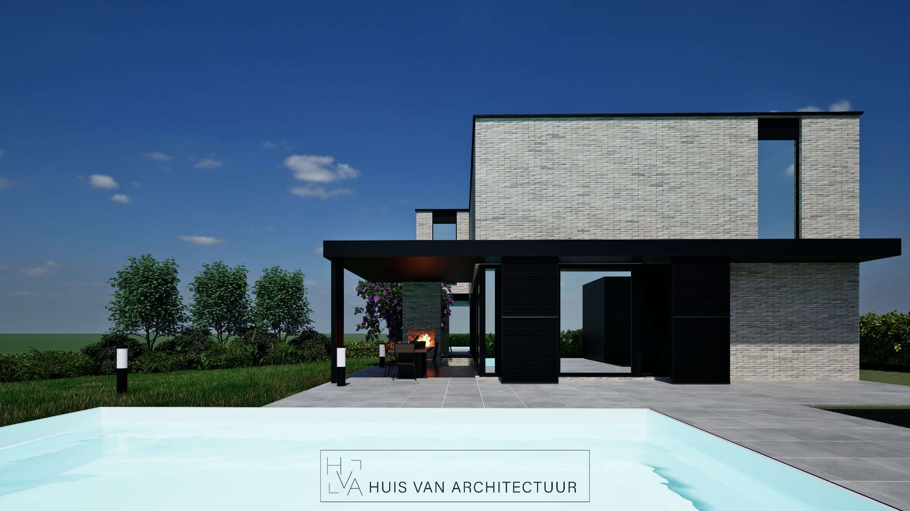

Moderne woning met poolhouse en zwembad

Strakke lijnen, open ruimtes en een naadloze dialoog met de omgeving
Deze moderne open bebouwing onderscheidt zich door haar elegante architectuur en zorgvuldige inbedding in het landschap. Grote raampartijen brengen licht diep naar binnen en creëren een vloeiende overgang tussen interieur en exterieur. De leefruimtes zijn open en verbonden, met directe toegang tot terras, zwembad en poolhouse – ideaal voor wie houdt van ontspannen wonen en gastvrijheid.


Het interieur is helder, minimalistisch en weerspiegelt de strakke lijnen van de gevel. Elk detail is doordacht: van materiaalkeuze tot de subtiele kleuren die het geheel verfijnen zonder te overheersen.


De woning is zorgvuldig ingeplant met respect voor de natuurlijke context en het bestaande reliëf. Architectuur, omgeving en woonkwaliteit versterken elkaar tot één harmonieus geheel.
Deze realisatie toont hoe hedendaags wonen vorm krijgt: modern, functioneel en helemaal in balans met zijn omgeving.
Deze realisatie toont hoe hedendaags wonen vorm krijgt: modern, functioneel en helemaal in balans met zijn omgeving.